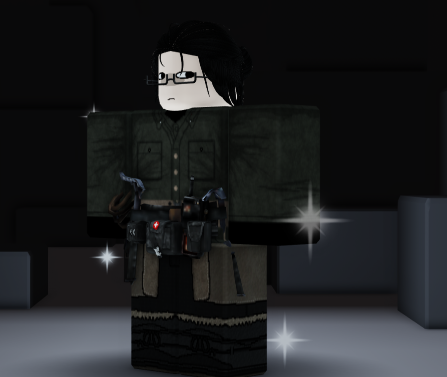
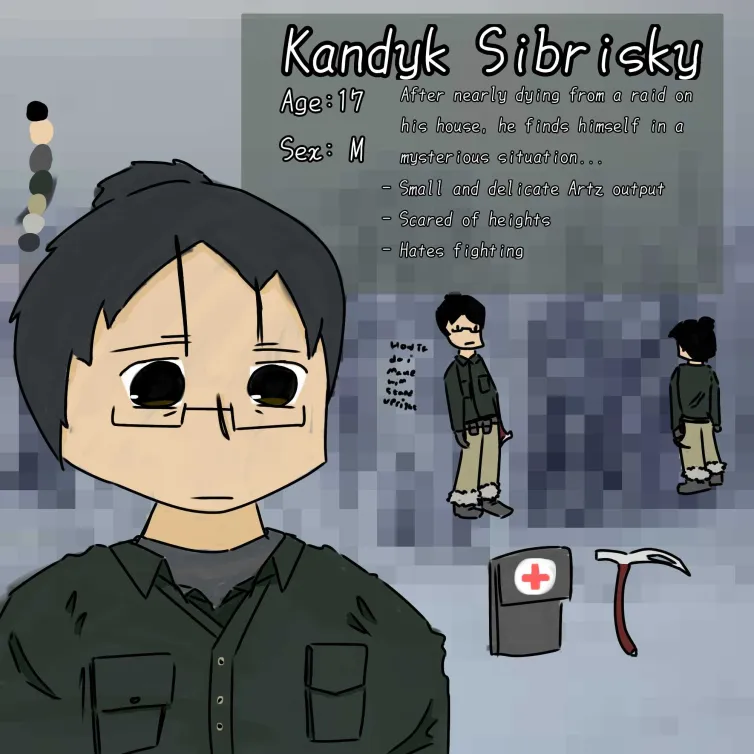

Medical Analysis
Roll to analyze the enemy weakpoint for a +2 advantage on an action roll.
Uses careful approach
Prequisites:
Internal Acelleration
Use fate points to remove a consequence from himself or his allies. Can be used outside battles.
Fate point requirements:
Architectually-Inclined
Roll to analyze weakpoint of structures OR anorganic enemies for a +2 advantage on an action roll, uses clever approach
Prequisites:
Before the void, he lived in a remote town inside eastern siberia. the zone was unstable, it being a contested area between two countries.
He was adopted by his grandfather after the mysterious dissapearance of his parents. Scared of the same thing happening to him and his grandfather, he swears to develop useful skills to escape and move to another country.
On the day of his departure however, a band of raiders ambushed him and his grandfather inside their own house. They both got pinned to the ground as the raiders prepare to shoot him. He closes his eyes.
A loud thunderous bang can be heard from where his grandfather was pinned down.
Someone walks towards him.
..
..
..?
Nothing happened.
His body felt light. The tight hold of the raiders suddenly vanished.
He opens his eyes